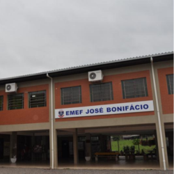
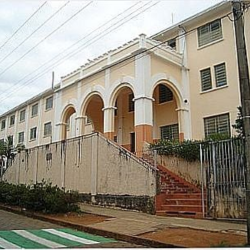
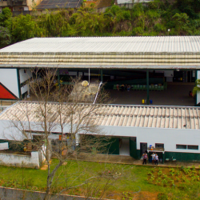

Sobre o Projeto
O +Ciência nas Escolas é uma iniciativa do Ministério da Educação (MEC) que visa transformar o ensino de Ciências nas escolas públicas por meio da integração entre educação, tecnologia e inovação.
Com apoio de instituições como o CNPq e o FNDCT, o projeto promove ações práticas e interativas que despertam o interesse dos estudantes pela ciência, estimulam o pensamento crítico e fortalecem o protagonismo juvenil.
Através de laboratórios makers, clubes de ciência, feiras e oficinas, o projeto incentiva a curiosidade científica, o letramento digital e a colaboração entre escolas, professores e comunidades.
Escolas Participantes
Escolas públicas envolvidas, com o apoio do IFSULDEMINAS - Campus Machado.
Escola Estadual Gabriel Odorico (Machado)
Escola Estadual José Bonifácio (Poço Fundo)

Escola Estadual Padre Piccinini (Paraguaçu)

Escola Estadual Rubens Garcia (Machado)

Objetivos do Projeto
Conheça os principais focos do +Ciência nas Escolas
Ensino Inovador
Fortalecer o ensino com práticas inovadoras como:
- - Arduino
- - Robótica
- - Impressão 3D
Divulgação
Divulgar ações e resultados das atividades realizadas nas escolas participantes.
Acesso à Educação Digital
Facilitar o acesso da comunidade escolar ao ensino de tecnologias.
Formação
Estimular o público envolvido com interação entre tecnologia e ciência.